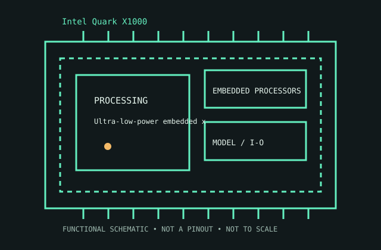

[ EMBEDDED PROCESSORS // IDENTIFIED CPU ]
Intel Quark X1000
Ultra-low-power embedded x86 SoC introduced 2013 for IoT/dev boards. 32-bit x86-compatible core up to 400 MHz; 16 KB instruction + 16 KB data L1; 2 MB on-die SRAM; integrated memory/IO controllers; 2.2 W class; 35 mm package.

MODEL IDENTIFICATION: Intel Quark X1000. Match full model suffix, stepping and package to the physical item and cited documentation.
Recorded specifications
| Cataloged model | Intel Quark X1000 |
|---|---|
| Era / family | Ultra-low-power embedded x86 SoC introduced 2013 for IoT/dev boards. |
| Model specifications | 32-bit x86-compatible core up to 400 MHz; 16 KB instruction + 16 KB data L1; 2 MB on-die SRAM; integrated memory/IO controllers; 2.2 W class; 35 mm package. |
| Compatibility | Embedded board-specific firmware, memory map and peripherals; no PC socket. |
| Variants / limits | Quark is microcontroller-class SoC, not Atom E-series PC processor. |
Compatibility and variants
- Embedded board-specific firmware, memory map and peripherals; no PC socket.
- Quark is microcontroller-class SoC, not Atom E-series PC processor.
- Check system-vendor CPU support, board revision, firmware minimum, package, memory, cooling and power before installation; similar socket naming does not prove compatibility.
Service and archival notes
Record dev board/OEM revision, firmware, memory arrangement and attached peripherals.
Archive the complete marking/OPN/sSpec, stepping, physical condition, tested host revision, firmware, memory population, cooling, and test conditions. Distinguish published limits from measurements.
Sources & further reading
- Intel ARK model lookup — Intel Quark X1000Official Intel model specification search for the cataloged product.
- Intel technical archive — Intel Quark X1000 product familyArchived Intel-authored processor data sheets/manuals; match model and revision.
- Intel processor-history reference — Intel Quark X1000Historical context for Intel processor generations; use the exact data sheet for limits.
Use the matching manufacturer data sheet revision and platform vendor’s CPU list for final fit decisions.